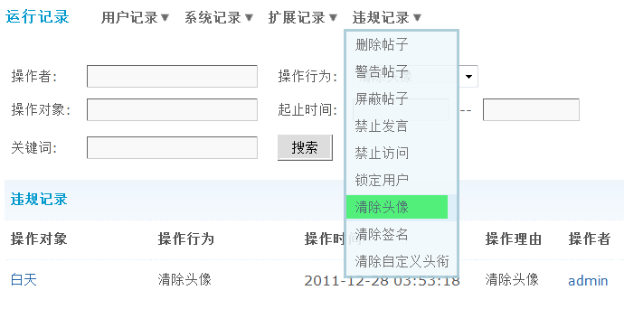

运行记录
想让站点能健康稳定的运行，就要经常对论坛的运行情况进行监控。运行记录提供了记录站点各个运行状态的功能。当遇到一些故障的时候，不妨来看看运行记录。
运行记录分四大类：用户记录、系统记录、扩展记录和违规记录。
操作路径：【后台】=>【工具】=>【运行记录】
一、用户记录
记录用户执行的或被执行的一些操作，包括：忘记密码、禁止用户、版主管理。
1、密码错误
如下图所示：
密码错误记录用户在登录的时候，多次尝试密码登录。更及时发现猜测密码的用户，或者忘记密码的用户，并帮助用户找回密码等。尝试密码是记录不完全的，这点是为了保护用户的隐私而设计的。只有部分字符而已。可以通过页面右下角的搜索查看您需要查看的信息，通过ip地址信息，或者用户名查找您需要的信息。
密码错误记录中的IP，需要在管理组内开启查看IP功能才能显示。
操作路径：【后台】=>【用户】=>【管理组】相应管理组中的管理权限，其它权限，允许查看 IP选择“是”。
2、禁止用户
如下图所示：
禁止用户记录着管理组对用户的禁止操作。当解封或者禁止其他人的操作的时候，可以在这里查到根据。可以通过页面右下角的搜索您需要的禁止用户信息。
禁止用户记录，需要在管理组内开启禁止用户功能才能显示。
操作路径：【后台】=>【用户】=>【管理组】相应管理组中的管理权限，管理面板权限，允许禁止用户，选择“是”。
3、版主管理
如下图所示：
版主管理记录着版主进行的所有操作，可以知道版主进行了什么操作。可以通过页面右下角的搜索查看您需要查看的信息。
二、系统记录
记录站点运行的过程中出现的一些问题，包括：后台访问、系统错误和邮件发送失败记录。
1、后台访问
如下图所示：
后台访问记录着管理组的成员户访问后台的记录。无论访问后台那个动作，都会有记录，对论坛的修改进行了提交后，在其他那个选项就会出现一些特殊的字符，就是 sql 的片段。所以这个记录很重要，可以了解到访问后台的管理组的人员，到底执行了什么操作。可以通过页面右下角的搜索您需要的后台访问信息。
2、系统错误
如下图所示：
系统错误记录着站点在运行状态中，出现的数据库错误，ftp 远程附件上传错误。这个记录可以帮助我们了解站点的运行情况。以通过页面右下角的搜索您需要的系统错误信息。
3、邮件发送失败
如下图所示：
记录所有邮件发送失败的记录，帮助我们了解，给哪些用户发送邮件没有成功。
三、扩展记录
记录系统中的一些其他操作，包括：用户评分、用户警告、积分变更、道具操作、勋章颁发、邀请注册、买卖主题。
1、用户评分
如下图所示：
用户评分记录着所有用户的评分记录，用户是否是恶意评分或者版主评分是否公正，都做到有证可查。这个记录可以通过用户名，被评用户名，分数，标题，原因看到也可以通过页面右下角的搜索查看您需要查看的信息。
2、用户警告
如下图所示：
这里可以查看被警告的帖子地址，被警告的用户、是谁警告的、警告时间以及警告的理由。
3、积分变更
如下图所示：
可以通过这里查看所有的积分变更详细记录，也可以通过页面上方的搜索，通过搜索筛选您需要查看的信息。
4、道具操作
如下图所示：
道具操作记录着前台道具市场的购买记录，和用户使用道具的记录。通过这个记录您可以全面的了解当前道具的使用情况。这个记录是存储在数据库里面的，所以查看的条件比较多，可以很精确的查看到您需要的记录。可以通过页面右下角的搜索您需要的道具操作信息。
同时页面左下角可以根据道具类型和动作分类列出道具的操作记录。
5、勋章颁发
如下图所示：
勋章颁发记录着所有勋章的颁发和收回的信息。可以通过左下角的下拉菜单来选择自己想要关注的勋章颁发信息。可以通过页面右下角的搜索您需要的勋章管理信息。
6、邀请注册
如下图所示：
邀请注册记录着邀请注册的所有使用情况。所有使用邀请注册的情况都一目了然。可以通过页面右下角的搜索您需要的邀请注册信息。
7、买卖主题
如下图所示：
卖主题记录着买卖主题的信息。所有买卖主题的交易都一目了然。可以通过页面右下角的搜索您需要的买卖主题信息。
四、违规记录
记录系统中的一些违规操作，包括：删除帖子、警告帖子、屏蔽帖子、禁止发言、禁止访问、锁定用户、清除头像、清除签名和清除自定义头衔。
1、删除帖子
如下图所示：
记录所有删帖记录的详情，可以在这里详细的看到是谁删除是谁的帖子，以及删除时间等信息。
2、警告帖子
如下图所示：
记录所有被警告的操作，包括警告时间、警告用户名、操作理由等信息。
3、屏蔽帖子
如下图所示：
所有被屏蔽的帖子都会记录在这里，您也可以通过条件搜索出需要的记录。
4、禁止发言
如下图所示：
所有被禁言的用户都会在这里记录。
5、禁止访问
如下图所示：
所有被禁止访问的用户都会在这里记录。
6、锁定用户
如下图所示：
所有被锁定的用户都会在这里记录。
7、清除头像
如下图所示：
记录在前台被清除用户头像的会员。
8、清除签名
如下图所示：
记录在前台被清除签名的会员。
9、清除自定义头衔
如下图所示：
记录在前台被消除的自定义头衔的会员